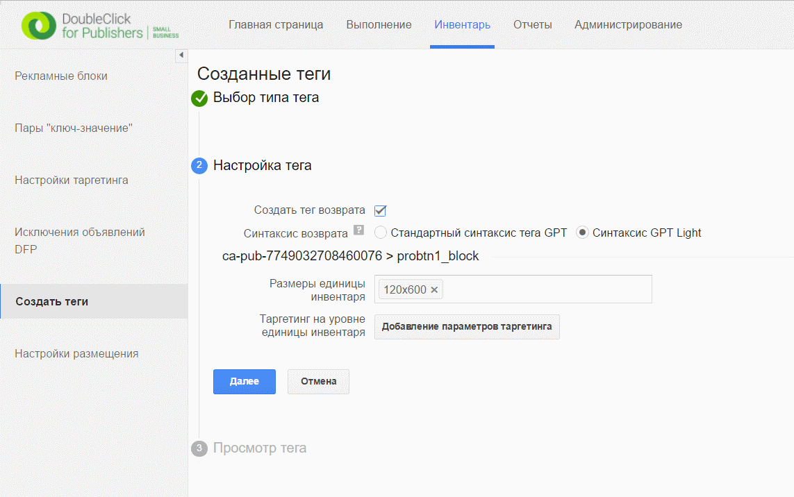
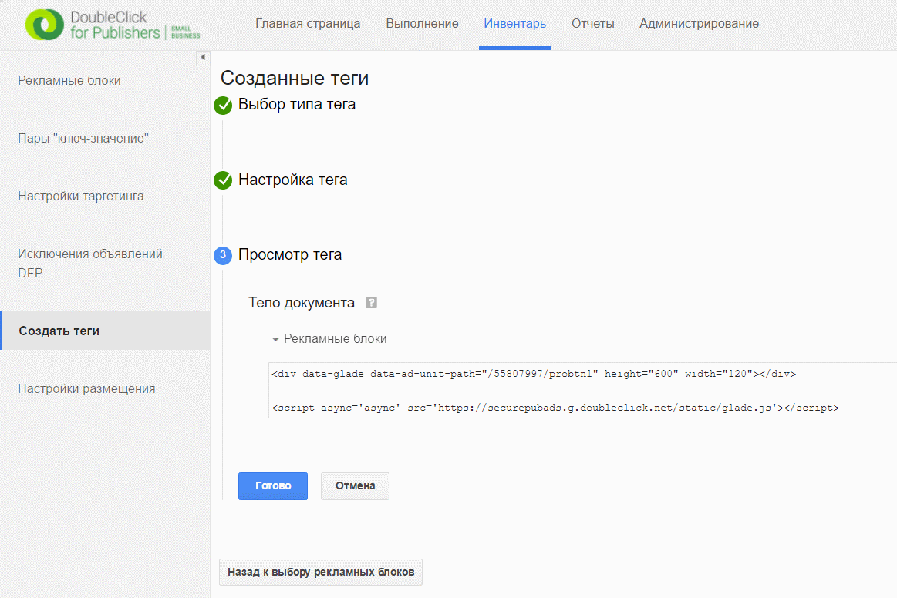

Использование passback кода¶
В кнопке есть возможность использовать passback код, который будет добавлен на страницу в случае, если кнопка выключена (от admin.probtn.com пришли данные о том что она выключена).
В частности в редактировании аппа мы можем добавить в поля Passback Code HTML код, который будет добавлен на страницу (если passback код был получен в виде JS кода, то нужно обрамить его в <script></script>).
Также для случая, если такой функционал нужен только для того, чтобы подсчитывать количество показов можно воспользоваться двумя полями OnShowPixel и OnNoShowPixel в которых можно указать пиксели на посчет показов и не показов соответственно.
В поле Passback Code Selector можно указать путь, куда будет добавлен passback код. По умолчанию используется #probtn_passback
Пример использования DFP passback кода¶
Описание получения passback кода доступно по следующей ссылке - https://support.google.com/dfp_sb/answer/2811375?hl=ru
В часности в инвентаре в создании тегов мы выбираем создание тега возврата
и после чего мы получим необходимый нам passback код
Пример полученного кода:¶
<div data-glade data-ad-unit-path="/55807997/probtn1" height="600" width="120"></div>
<script async='async' src='https://securepubads.g.doubleclick.net/static/glade.js'></script>